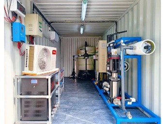
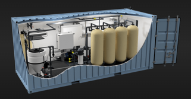
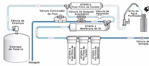
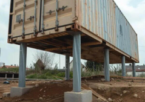
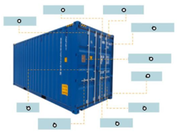

El Container
Núcleo modular del sistema AQUA-8 â Container marÃtimo 20' reacondicionado
Container MarÃtimo 20' Reacondicionado
El corazón de AQUA-8 es un contenedor marÃtimo de 20 pies, reacondicionado y adaptado para albergar todo el sistema de tratamiento de agua. Esta elección garantiza portabilidad, resistencia y bajo costo.
- Tipo: Container 20' HC (High Cube) marÃtimo reacondicionado
- Dimensiones internas: ~5.9m x 2.35m x 2.69m (L x A x H)
- Volumen útil: ~37 m³
- Estructura: Acero Corten, resistente a corrosión marina
- Costo estimado: USD $3,500

Adaptación Interior
El interior del contenedor se acondiciona completamente para albergar equipos de tratamiento de agua, sistemas eléctricos y área de control, cumpliendo con normas de seguridad industrial.
- Aislamiento térmico: Poliuretano expandido en paredes y techo
- Recubrimiento anticorrosivo: Pintura epóxica en todas las superficies
- Ventilación forzada: Extractores para control de humedad y temperatura
- Iluminación LED: System de emergencia incluido
- Piso antideslizante: Rejilla de acero inoxidable
- Costo estimado: USD $4,500

Layout del Container
El espacio interno se organiza en zonas funcionales para optimizar el flujo de proceso y facilitar el mantenimiento.
- Zona A â Pre-treatment: Filtros multimedia, UF, dosificación quÃmica
- Zona B â Ãsmosis Inversa: Skid SWRO, bombas de alta presión, membranas
- Zona C â Post-treatment: UV, remineralización, tanque pulmón
- Zona D â Control: PLC, HMI, tablero eléctrico, monitoreo
- Zona E â EnergÃa: Inversor solar, protecciones, distribución

Fundación y Anclajes
Aunque el contenedor es portátil, requiere una base estable para asegurar la operación a largo plazo y proteger los equipos de vibraciones.
- Base de concreto: 6m x 3m x 0.15m con varilla de refuerzo
- Anclajes: Pernos de acero galvanizado en esquinas
- Drenaje: System de evacuación de agua de rechazo
- Nivelación: Platinas ajustables para terreno irregular
- Costo estimado: USD $1,500

¿Por qué un Container?
La elección de un contenedor marÃtimo como núcleo del sistema no es casual. Responde a múltiples ventajas estratégicas para el despliegue en comunidades aisladas.
- Portabilidad: Transportable por camión, barco o helicóptero
- Rapidez: Instalación en menos de 1 dÃa
- Seguridad: Estructura robusta contra vandalismo y clima
- Estandarización: Replicable en cualquier parte del mundo
- Bajo costo: Reutilización de contenedores descartados
- Scalability: Múltiples contenedores = mayor capacidad
